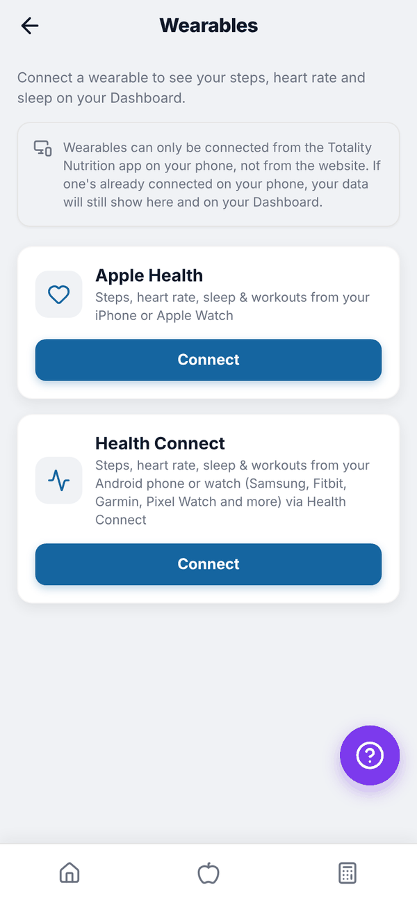
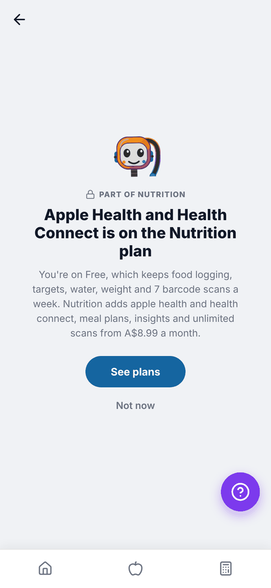

Totality Nutrition guide
Apple Health and Health Connect
Connect Apple Health on iPhone or Health Connect on Android to see steps, heart rate and sleep on Home.
Connect your phone's health data to see today's steps, heart rate, sleep and active calories on Home. Apple Health and Health Connect are Trial and Paid. On Free the Wearables screen shows a "part of Nutrition" screen with See plans.


Connect on iPhone: Apple Health#
- Open the Totality Nutrition app on your iPhone.
- Go to Settings (gear on Home), then Connect a wearable. Or tap the Connect a wearable card on Home.
- Under Apple Health, tap Connect.
- Allow access in the Health permission prompt.
- You'll see "Apple Health is now connected."
Connect on Android: Health Connect#
- Open the Totality Nutrition app on your Android phone.
- Go to Settings, then Connect a wearable.
- Under Health Connect, tap Connect.
- If asked, install or update Health Connect from the Google Play Store. It's built into Android 14 and newer.
- Allow access to steps, heart rate and sleep in the Health Connect prompt.
Health Connect brings in data from your Android phone or watch, including Samsung, Fitbit, Garmin and Pixel Watch, as long as they write to Health Connect.
What shows on Home#
The wearable card shows steps, heart rate in bpm, hrs sleep and burned (active calories), with "Today", "No sync yet today" or "Not synced yet". Tap the x on the "Connect a wearable" card to hide it.
On the web#
Wearables can only be connected from the phone app, not the website. If one is already connected on your phone, its data still shows on the web.
Questions#
Can I connect both Apple Health and something else?
Only one connection at a time.
I use Totality too. Do I connect twice?
No. The connection is on your account, so connecting in one app shows in the other.
Does it add my exercise calories to my target?
No. Steps, heart rate, sleep and burned calories are shown for information. Your targets don't change.
How do I disconnect?
Open Connect a wearable in Settings and tap Disconnect on the connected one.